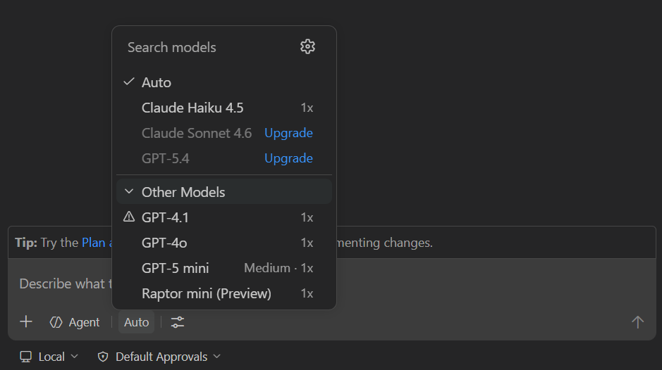
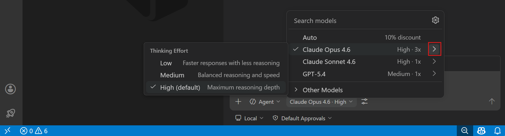
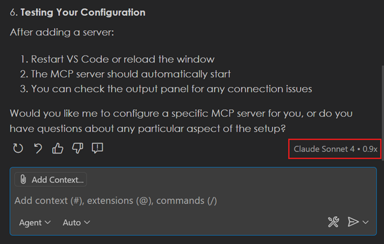
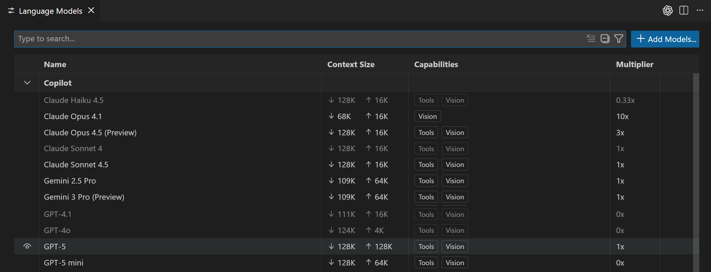
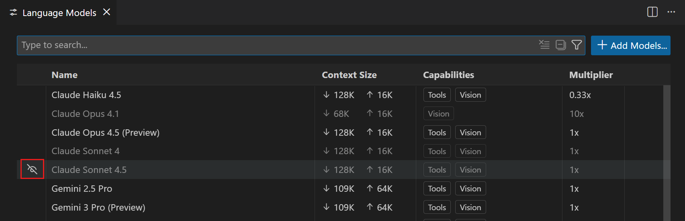
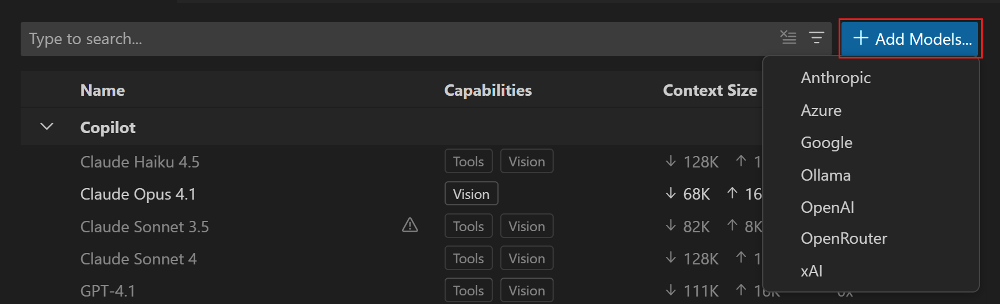
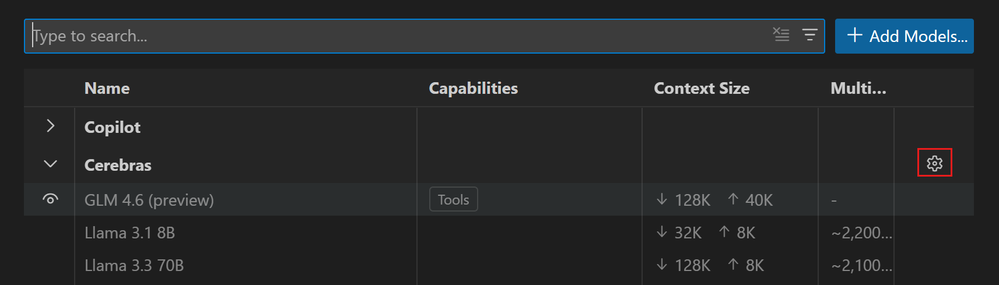

VS Code 中的 AI 语言模型
Visual Studio Code 为您提供了多个内置语言模型，每个模型都针对不同的任务进行了优化。您可以切换聊天、内联建议和实用任务的模型，还可以通过使用自己的 API 密钥来添加更多模型。
有关语言模型工作原理、其特性以及如何选择合适模型的背景信息，请参阅语言模型概念。
更改聊天模型
使用聊天输入字段中的语言模型选择器来更改聊天对话和代码编辑的模型。

不同的模型有不同的优势。使用快速模型进行快速编辑和简单问题，使用推理模型进行复杂的重构、架构决策或多步骤任务。根据您使用的代理类型，可用模型列表可能会有所不同。
您可以通过使用自己的语言模型 API 密钥进一步扩展可用模型列表。
[!TIP]
安装 AI Toolkit 扩展以添加更多语言模型，增强 GitHub Copilot 的功能。
>
有关更多信息，请参阅更改聊天模型。
[!NOTE]
如果您是 Copilot Business 或 Enterprise 用户，您的管理员需要在 GitHub.com 上的 Copilot 策略设置中选择加入 Editor Preview Features，以便为您的组织启用某些模型。
配置思考力度
某些模型支持可配置的思考力度，它控制模型对每个请求应用的推理程度。有关思考和推理的背景信息，请参阅思考与推理。
默认情况下，VS Code 设置了推荐的力度级别并启用了自适应推理，模型会根据每个请求的复杂性动态确定思考的深度。对于大多数用例，默认设置效果良好。
[!TIP]
更高的思考力度会产生更多的思考令牌，从而增加 AI 信用额度的消耗。仅对真正复杂的任务提高思考力度。了解更多关于优化 AI 信用额度使用的信息。
配置思考力度：
- 打开聊天输入字段中的模型选择器，选择一个推理模型。
- 选择模型名称旁边出现的 > 箭头，打开思考力度子菜单。
[!NOTE]
非推理模型（如 GPT-4.1 和 GPT-4o）不会显示思考力度子菜单。
- 选择一个力度级别。

模型选择器标签会更新以显示所选力度级别，例如"Claude Sonnet 4.6 · 高"。同一模型的力度级别会在对话之间持久保留。
[!NOTE]
setting(github.copilot.chat.anthropic.thinking.effort)和setting(github.copilot.chat.responsesApiReasoningEffort)设置已被弃用。请直接从语言模型选择器配置思考力度。
使用自动模型选择
使用自动模型选择时，VS Code 会评估任务复杂性和实时模型可用性，将每个请求路由到最佳模型。有关自动模型选择工作原理的背景信息，请参阅自动模型选择。
要使用自动模型选择，请在聊天中的模型选择器中选择自动。您可以通过将鼠标悬停在聊天响应上来查看用于生成响应的模型。

管理语言模型
您可以使用语言模型编辑器查看所有可用模型、选择在模型选择器中显示哪些模型，以及通过从内置提供程序或扩展提供的模型提供程序添加更多模型。
要打开语言模型编辑器，请打开聊天视图中的模型选择器，选择管理语言模型（齿轮图标），或从命令面板运行聊天: 管理语言模型命令。语言模型编辑器默认在编辑器区域上方的模态浮层中打开。

编辑器列出了所有可供您使用的模型，显示关键信息，如模型功能、上下文大小、计费详情和可见性状态。默认情况下，模型按提供程序分组，但您也可以按可见性分组。
您可以使用以下选项搜索和筛选模型：
- 使用搜索框进行文本搜索
- 提供程序：
@provider:"OpenAI" - 功能：
@capability:tools，@capability:vision，@capability:agent - 可见性：
@visible:true/false自定义模型选择器
您可以通过在语言模型编辑器中更改模型的可见性状态来自定义模型选择器中显示的模型。您可以显示或隐藏任何提供程序的模型。
将鼠标悬停在列表中的模型上，选择眼睛图标以在模型选择器中显示或隐藏该模型。

固定常用模型
固定模型可将其保留在模型选择器顶部的固定位置。固定的模型会显示在专用的已固定部分中，不会因您使用其他模型而移动位置。
固定或取消固定模型：
- 打开聊天输入字段中的模型选择器。
- 将鼠标悬停在模型上，选择图钉图标将其添加到已固定部分。
- 要取消固定模型，请在已固定部分中将鼠标悬停在该模型上，选择取消固定图标。
自带语言模型密钥
如果您想使用不可用的内置模型，或者想控制模型托管，您可以使用自己的语言模型 API 密钥（BYOK）来使用其他提供程序的模型或在本地运行模型。有关为什么可能需要自带密钥以及需要考虑的事项的背景信息，请参阅自带语言模型密钥。
BYOK 模型无需登录 GitHub 账户，也无需 Copilot 计划即可使用。即使未登录，您也可以使用聊天: 管理语言模型命令添加模型。这使您能够完全使用自己的模型来使用 AI 聊天功能，包括使用 Ollama 等本地模型的完全离线场景。
[!NOTE]
某些功能仍然需要 GitHub 账户：语义搜索、内联建议（代码补全）以及依赖嵌入的功能。BYOK 仅适用于聊天体验和实用任务。
VS Code 提供了多种选项来添加更多语言模型：
| 选项 | 使用场景 | 入门指南 | ||
|---|---|---|---|---|
| -------- | ------------- | ------------- | ||
| 内置提供程序 | 您需要的提供程序已在列表中（Azure、Anthropic、Gemini、OpenAI 等） | 输入已知提供程序的 API 密钥 | ||
| 自定义端点 _(Insiders)_ | 您有自托管、企业或其他端点，支持 Chat Completions、Responses 或 Messages API | 将 VS Code 指向任何兼容的 URL | ||
| 扩展 | 市场扩展提供了模型，例如用于本地模型的 AI Toolkit | 安装扩展并按照其设置操作 |
您还可以使用这些模型来覆盖用于 VS Code 中实用任务的模型（例如标题生成和意图检测）。
[!NOTE]
如果您是 Copilot Business 或 Enterprise 用户，您的管理员可以在 GitHub.com 上的 Copilot 策略设置中禁用 Bring Your Own Language Model Key in VS Code 策略。有关更多详细信息，请参阅 GitHub Copilot 文档。
从内置提供程序添加模型
从一组可在 VS Code 中直接使用的常用提供程序中选择。根据提供程序的不同，您需要 API 密钥和其他配置详细信息，如端点 URL。
从内置提供程序配置语言模型：
- 从语言模型选择器中选择管理语言模型（齿轮图标），或从命令面板运行聊天: 管理语言模型命令，打开语言模型编辑器。
- 选择添加模型，然后从列表中选择一个模型提供程序。

- 为模型输入一个组名称。这是在模型选择器和语言模型编辑器中显示的分组标签。
如果需要，您可以稍后从语言模型编辑器中更改组名称。
- 输入提供程序特定的详细信息，如 API 密钥或端点 URL。
- 如果提供程序需要额外配置，VS Code 会打开一个
chatLanguageModels.json文件，您可以在其中配置提供程序和模型详细信息。有关配置属性的详细信息，请参阅模型配置参考。
以下示例显示了使用 Entra ID 身份验证的 Azure OpenAI 配置：
[
{
"name": "Azure",
"vendor": "azure",
"models": [
{
"id": "<my-deployment-name>",
"name": "GPT-5.5",
"url": "https://<my-endpoint>.openai.azure.com",
"toolCalling": true,
"vision": true,
"maxInputTokens": 200000,
"maxOutputTokens": 64000
}
]
}
]- 配置模型后，您现在可以从聊天中的模型选择器中选择它。
要使模型在聊天中使用代理时可用，它必须支持工具调用。如果模型不支持工具调用，它将不会显示在模型选择器中。
添加自定义端点模型
[!NOTE]
它取代了已弃用的 OpenAI 兼容提供程序，并支持其他 API 类型。setting(github.copilot.chat.customOAIModels) 设置已被弃用。
自定义端点提供程序允许您将任何兼容的 API 端点连接到 VS Code 中的聊天。它支持三种 API 类型，您可以按模型选择：Chat Completions、Responses 和 Messages。
使用自定义端点提供程序添加模型：
- 从语言模型选择器中选择管理语言模型（齿轮图标），或从命令面板运行聊天: 管理语言模型命令，打开语言模型编辑器。
- 选择添加模型，然后从列表中选择自定义端点。
- 为模型输入一个组名称。这是在模型选择器和语言模型编辑器中显示的分组标签。
如果需要，您可以稍后从语言模型编辑器中更改组名称。
- 输入端点的显示名称和 API 密钥。
- 选择 API 类型：Chat Completions、Responses 或 Messages。请确保模型支持此 API 类型。
- VS Code 会打开一个
chatLanguageModels.json文件，您可以在其中配置模型详细信息。更新模型属性并保存文件。有关配置属性的详细信息，请参阅模型配置参考。
以下示例显示了 Anthropic 端点的 Messages API 配置：
[
{
"name": "Anthropic",
"vendor": "customendpoint",
"apiKey": "YOUR_API_KEY",
"apiType": "messages",
"models": [
{
"id": "claude-sonnet-4-6",
"name": "Claude Sonnet 4.6",
"url": "https://api.anthropic.com/v1/messages",
"toolCalling": true,
"vision": true,
"maxInputTokens": 200000,
"maxOutputTokens": 64000
}
]
}
]- 配置模型后，在聊天中的模型选择器中选择它。
[!TIP]
如果您添加的模型没有立即出现在模型选择器中，请重启 VS Code。
添加模型提供程序扩展
您可以从 Visual Studio Marketplace 安装为 VS Code 添加语言模型提供程序的扩展。这些扩展可以提供对其他云托管或本地运行模型的访问。例如，Foundry Toolkit for VS Code 扩展提供了对 Foundry 本地和云托管模型的访问。
添加模型提供程序扩展：
- 打开扩展视图，搜索
@tag:language-models。 - 选择安装以安装扩展，例如 Foundry Toolkit for VS Code。
- 按照扩展的设置说明配置模型访问。
- 扩展的模型会出现在聊天中的模型选择器和语言模型编辑器中。如果模型没有出现，请重新加载 VS Code。
更新模型提供程序详细信息
更新之前配置的模型提供程序的详细信息：
- 从聊天视图中的语言模型选择器中选择管理语言模型（齿轮图标），或从命令面板运行聊天: 管理语言模型命令。
- 在语言模型编辑器中，选择要更新的模型提供程序旁边的齿轮图标。

- 更新提供程序详细信息，如 API 密钥或端点 URL。
配置其他功能的模型
除了主聊天模型之外，您还可以配置用于内联聊天、内联建议和后台实用任务的模型。
更改内联聊天模型
您可以为编辑器内联聊天配置默认语言模型。这使您可以为内联聊天使用与聊天对话不同的模型。
要配置内联聊天的默认模型，请使用 setting(inlineChat.defaultModel) 设置。该设置列出了模型选择器中的所有可用模型。
如果您在内联聊天会话期间更改模型，该选择会在会话剩余时间内持续保留。重新加载 VS Code 后，模型将重置为 setting(inlineChat.defaultModel) 设置中指定的值。
更改内联建议模型
更改用于在编辑器中生成内联建议的语言模型：
- 从 VS Code 标题栏中的聊天菜单中选择配置内联建议...。
- 选择更改补全模型...，然后从列表中选择一个模型。
[!NOTE]
可用模型列表可能会有所不同并随时间变化。当没有替代模型可用时，更改模型的选项将不可用。
>
如果您是 Copilot Business 或 Enterprise 用户，您的管理员需要在 GitHub.com 上的 Copilot 策略设置中选择加入 Editor Preview Features，以便为您的组织启用某些模型。
更改实用任务模型
除了主聊天模型之外，VS Code 还在后台使用轻量级模型执行实用任务，例如生成标题、创建提交消息和检测意图。默认情况下，这些任务使用 GitHub Copilot 提供的内置实用模型。您可以使用任何可用模型（包括 BYOK和扩展提供的模型）覆盖用于这些任务的模型。
根据任务类型，有两个实用模型设置：
setting(chat.utilityModel)：覆盖用于通用实用流程的模型，例如生成标题和摘要、设置搜索以及 Git 审查。setting(chat.utilitySmallModel)：覆盖用于快速、轻量级实用流程的模型，例如提交消息、重命名建议、分支名称生成、提示分类和意图检测。建议为此设置使用快速且经济的模型。
两个设置都默认使用默认，即使用 GitHub Copilot 的内置实用模型。
如果您使用 BYOK 模型但未登录 GitHub 账户，则内置实用模型不可用。VS Code 会在聊天视图中显示通知，提示您配置实用模型。将 setting(chat.utilityModel) 和 setting(chat.utilitySmallModel) 设置为 BYOK 模型，以启用标题生成和提交消息创建等实用功能。
模型配置参考
添加 BYOK 模型时，您可以在 chatLanguageModels.json 文件中配置模型属性。配置有两个级别：提供程序级别和模型级别。
根据提供程序的不同，某些提供程序和模型属性可能是必需的，而其他属性可能是可选的。例如，某些提供程序只需要 API 密钥和端点 URL，并自动发现可用模型，而其他提供程序则要求您为每个模型指定详细信息。
提供程序级别的属性包括：
| 属性 | 描述 | ||
|---|---|---|---|
| ---------- | ------------- | ||
vendor | 模型的提供程序，例如 azure，openai，customendpoint | ||
name | 在 UI 中显示的提供程序显示名称（组名称）。 | ||
models | _（可选）_ 由此提供程序提供的模型配置数组。 |
models 数组中的每个模型支持以下属性：
| 属性 | 描述 | ||
|---|---|---|---|
| ---------- | ------------- | ||
id | 发送到 API 的模型标识符。例如，对于 Foundry，这是部署名称。 | ||
name | 在模型选择器中显示的显示名称。 | ||
url | 模型的完整端点 URL。 | ||
apiType | _（可选）_ 按模型覆盖 API 类型（chat-completions，responses 或 messages）。默认为提供程序级别的 apiType。 | ||
toolCalling | 如果模型支持工具调用，则设置为 true。 | ||
vision | 如果模型支持图像输入，则设置为 true。 | ||
maxInputTokens | 模型接受的最大输入令牌数。 | ||
maxOutputTokens | 模型生成的最大输出令牌数。 | ||
editTools | _（可选）_ 模型支持的编辑工具数组。如果未配置，编辑器会尝试多种编辑工具并选择最佳工具。可能的值：find-replace，multi-find-replace，apply-patch，code-rewrite。 | ||
thinking | _（可选）_ 如果模型支持思考能力，则设置为 true。默认为 false。 | ||
streaming | _（可选）_ 如果模型支持流式响应，则设置为 true。默认为 true。 | ||
zeroDataRetentionEnabled | _（可选）_ 如果为此端点启用了零数据保留（ZDR），则设置为 true。启用后，不会通过 Responses API 在请求中发送 previous_response_id。默认为 false。 | ||
supportsReasoningEffort | _（可选）_ 模型接受的推理力度级别数组（例如 ["low", "medium", "high"]）。设置后，模型选择器中会显示思考力度选择器。常见级别为 minimal，low，medium，high。 | ||
reasoningEffortFormat | _（可选）_ 用于向模型转发推理力度的请求体格式。chat-completions 发送顶级 reasoning_effort 字符串。responses 发送嵌套的 reasoning.effort 对象。未设置时，格式跟随 URL。 | ||
requestHeaders | _（可选）_ 一个包含要随请求发送到此模型的其他 HTTP 标头的对象。某些保留标头（禁止、转发和内部标头）不被允许，如果存在则会被忽略。 |
常见问题解答
如何为 Copilot Business 或 Copilot Enterprise 启用自带模型密钥？
如果您是 Copilot Business 或 Enterprise 用户，您的组织管理员必须在 GitHub.com 上的 Copilot 策略设置中启用 Bring Your Own Language Model Key in VS Code 策略。启用策略后，您可以像个人计划用户一样使用自己的 API 密钥添加模型。有关更多详细信息，请参阅 GitHub Copilot 文档。
能否在 VS Code 中与 Copilot 一起使用本地托管的模型？
您可以通过自带模型密钥（BYOK）并使用支持连接到本地模型的模型提供程序，在聊天中使用本地托管的模型。您有多种选项来连接到本地模型：
- 使用支持本地模型的内置模型提供程序
- 从 Visual Studio Marketplace 安装扩展，例如 AI Toolkit for VS Code with Foundry Local
本地托管的模型无需 GitHub 账户、无需 Copilot 计划，也无需互联网连接即可使用。要获得完整的实用功能集（标题生成、提交消息等），请将 setting(chat.utilityModel) 和 setting(chat.utilitySmallModel) 配置为指向本地模型。
目前，您无法为内联建议连接到本地模型。VS Code 提供了一个扩展 API InlineCompletionItemProvider，使扩展能够贡献自定义补全提供程序。您可以从我们的内联补全示例开始。
[!NOTE]
某些功能需要 GitHub 账户和互联网连接：语义搜索、内联建议（代码补全）以及依赖嵌入的功能。这些功能无法通过 BYOK 模型使用。
能否在没有互联网连接的情况下使用本地模型？
可以，您可以完全离线使用本地模型。使用聊天: 管理语言模型命令添加本地模型提供程序（如 Ollama），在聊天中选择该模型，然后开始使用。要同时启用标题生成和提交消息等实用功能，请将 setting(chat.utilityModel) 和 setting(chat.utilitySmallModel) 设置为本地模型。依赖 GitHub Copilot 服务的功能（如语义搜索、内联建议和嵌入）在离线时不可用。
能否在没有 Copilot 计划的情况下使用本地模型？
可以，您可以在没有 Copilot 计划且不登录 GitHub 账户的情况下使用 BYOK 模型（包括本地模型）。使用聊天: 管理语言模型命令添加模型，并在聊天中选择它。依赖 GitHub Copilot 服务的功能（如语义搜索、内联建议和嵌入）需要 Copilot 计划。